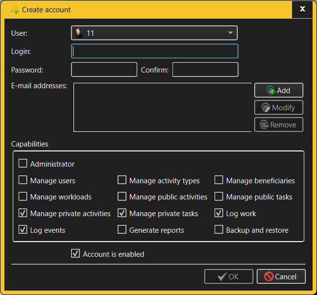

Create/Modify Account dialog
The same dialog is used for both creating new Accounts and modifying existing
Accounts.

The fields in the Create/Modify Account dialog allow the user to specify:
- User - specifies the Use to which the Account belongs.
It can be freely chosen when creating a new Account; however, TimeTracker3
does not currently allow re-parenting an Account to another User.
- Login - each Account is uniquely identified by its
"login", which must be unique within the containing workspace.
- Password and Confirm Password - in
TimeTracker3 Accounts are password-protected. The user is required to type
in the same password twice when creating a new Account or changing a
password for an existing Account; this helps prevent unintended typing
errors when entering the password.
- E-mail addresses - One or more e-mail addresses can be
associated with an Account. These are utilized when e.g. auto-mailing
notifications (or simply to distinguish different persons who happen to have
the same names). Use Add, Modify and
Remove buttons to manage the list of Account's e-mail
addresses. If the Account does not specify any e-mail addresses, the list of
e-mail addresses is implicitly inherited from the Account's parent User.
- Capabilities - these check boxes define the sorts of
operations someone logged in with that Account can and cannot perform. The
available capabilities are:
- Administrator - allows the account holder to do
anything within the workspace, including management of private assets of
the Users defined therein.
- Manage users - allows the account holder th create,
modify and destroy Users and Accounts.
- Manage activity types - allows the account holder
to create, modify and destroy "activity types", which is normally the
project manager's responsibility. A user without that capability will be
able to refer to the existing activity types, but not to create, modify
or destroy them.
- Manage beneficiaries - allows the account holder to
create, modify and manage Beneficiaries. These represent external
entities who act as stakeholders in the projects that are being worked
on (and who will ultimately be billed for the effort dedicated to these
projects).
- Manage workloads - allows the account holder to
create, modify and destroy Projects and Work Streams. These represent
the targets that daily efforts strive to achieve,
- Manage public activities - allows the account
holder to create, modify and destroy Public Activities. Without this
capability, the user will be limited to logging Work items only against
the already existing Public Activities.
- Manage public tasks - allows the account holder to
create, modify and destroy Public Tasks. Without this capability, the
user will be limited to logging Work items only against the already
existing Public Tasks. This specifically relates to marking a Public
Task as "completed".
- Manage private activities - allows the account
holder to create, modify and destroy their own Private Activities.
Without this capability, the user will be limited to logging Work items
only against the already existing Private Activities.
- Manage private tasks - allows the account holder to
create, modify and destroy their own Private Tasks. Without this
capability, the user will be limited to logging Work items only against
the already existing Private Tasks. This specifically relates to marking
a Private Task as "completed".
- Log work - allows the account holder to log Work
items against available Activities and Tasks by "starting" one of them
before working on it and later "stopping" the Activity or Task when
switching to doing something else.
- Log events - allows the account holder to log
arbitrary comments into the work log. These do not contribute to the
history of effort (as Work items do), but may be used to attach
arbitrary notes to the daily log.
- Generate reports - allows the account holder to
generate various reports. This capability is typically required by a
team manager or project manager. Note that this capability does not
apply to Quick Reports, which will always show only what the account
holder is allowed to see during the normal daily operations. If granted,
this capability applies to all available reports.
- Backup and restore - allows the account holder to
perform workspace backup and restore operations. This is typically the
responsibility of the system administrator.
- Enabled - by default, all Accounts are created as
"enabled". "Disabling" an Accountwillldisallow logging in to the TimeTracker3
workspace using any of that User's Accounts. NOTE that it is not possible to
disable the last workspace administrator User.Account.
Generally an Administrator or Manage Users capability is required to create
new Accounts and modify existing Accounts. The only exception to this rule is that
anyone who has an Account in a given workspace and who logs into TimeTracker3
using that Account will be able to modify some of the details of the
Account in question, specifically - the Account's password and e-mail addresses
(but not the Account's login, capabilities or enabled status).
See also: -